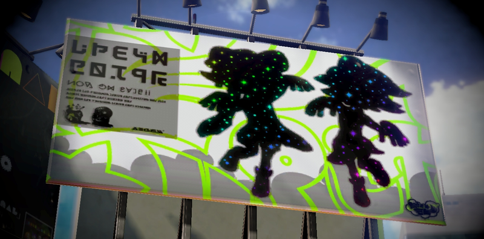

Inkopolis
The Plaza is in the shape of a square with a large sidewalk and different shops to the side. At the far back is Inkopolis Tower which players can enter to access Regular Battle and Ranked Battle.
To the left of the main entrance is Booyah Base, a mall in which the player can buy gear from. The stores in this mall are Ammo Knights, the weapon shop, Cooler Heads, the headgear shop, Jelly Fresh, the clothing shop, and Shrimp Kicks, the shoe store.
Each shop has a charismatic Shop Keeper, and each one represents a different type of marine life. They are Sheldon, Annie (and Moe), Jelonzo, and Crusty Sean. There is also a manhole in the far right corner where Octo Valley is accessed. Other areas include one of the alleyways where Spyke can be found, the Arcade Machine across from the Booyah Base, and the amiibo machine which can be found towards the back.
Inkopolis viewed south-wise On the second floor is the Battle Dojo and the Inkopolis News Studio. After battling with other players online, their Inklings will temporarily appear in the player's plaza. Their name, level, rank, gear, and Miiverse post (if present) can all be seen by examining them with Button1 A.png. From there the player can also order their gear from Spyke. Inkopolis Plaza features two large statues of creatures from Japanese folklore. A tanuki sits on top of the Squid Sisters' studio and a kitsune, or fox spirit, sits on Booyah Base. The animals depicted on these statues were the two sides of the second Japanese Splatfest. There are also three speakers, aside from the ones infront of Inkopolis Tower, that play different tunes. One can be found by Booyah Base and the other two can be found to the left and right from the back of the Plaza 